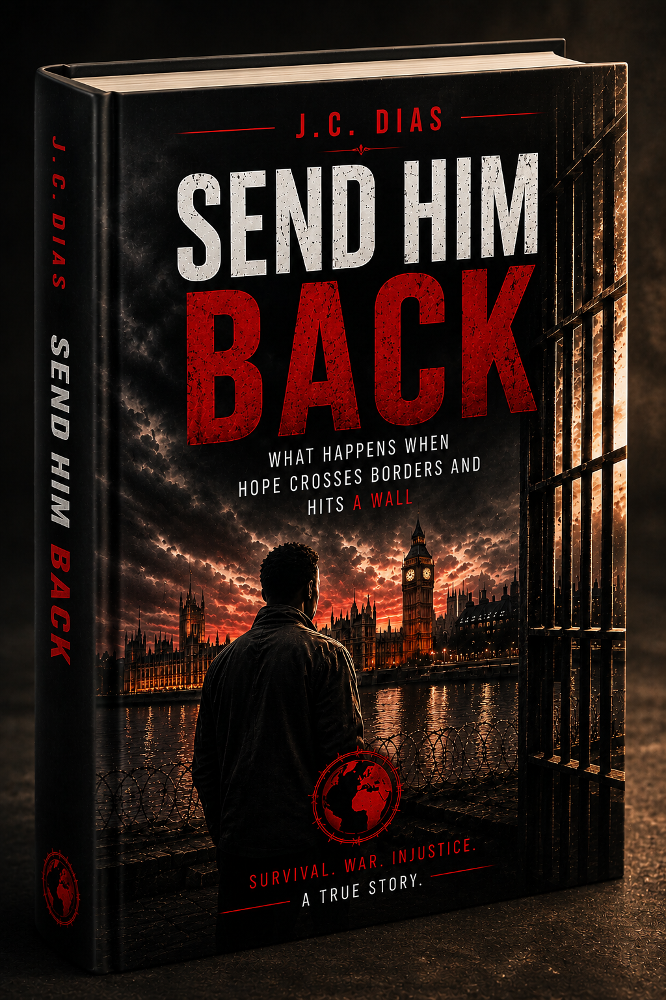

This is not a
political book.
It is not about left or right.
It is not about immigration statistics.
It is not about headlines.
It is about a boy. A village. A journey. A prison cell.
And a story the world tried not to hear.

War destroyed his village. Slavery stole his freedom. Prison almost took his future.
Yet somehow, he survived.
It is not about left or right.
It is not about immigration statistics.
It is not about headlines.
It is about a boy. A village. A journey. A prison cell.
And a story the world tried not to hear.
A childhood destroyed by war.
Freedom stolen.
Survival became the only goal.
Hope became a dangerous crossing.
The country he believed would save him.
Where hope hit a wall.
Ashir was not looking for politics. He was not looking for attention. He was looking for safety.
But before he reached it, he had to survive what most people cannot even imagine.
Before you judge a person by a label, walk with him through the story that gave him scars.
Start Reading Today